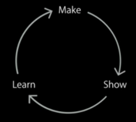

Author: Charles Zhu Summary: notes for 223
原型设计的作用好比开发阶段设计的作用一样，不可缺少。它可以节约时间、成本，把有限的资源放到需要的地方。
这一讲的内容分为下面几个部分：
- 原型的重要性
- 如何利用原型改进产品
- 原型设计的工具
- 制作fake app
重要性
它的重要性在于是点子到产品过程中的必经之路，做得越充分越有利用产品的形成。这个毋需多言。
步骤
How是进行原型的关键，通常就是结构任务，并带着问题去回答每一步。演讲者将过程分为3步：
- Make fake apps
- Show people
- Learn from their feedback
三者的关系如下图：

这个闭环首先表明原型设计的无止境，同时也表明这是一个带有反馈的系统表达。
Make
演讲者给了3个问题来帮助剖析：
- What needs to be more real
- What can we fake
- Where will they use it
make的目的是为了给人看，那么就需要判断fake app中看上去更真实（和最终产品的样貌一致的部分），以及哪些部分进行fake（指的是不是仅仅用几张屏幕截图来组成fake app，而是分割成不同的组成部分），比如文字，图标，图片等。当然，我们要确保用户会在iphone/ipad的设备上使用。
Show
还是3个问题:
- Do you know how to ____?
- is it easy to ____?
-
How can we make this better? 这里的空格就是表示fake app所承载的功能，就是问用户：
-
我这个是用来做某某事的，你知道怎么做吗
- 这样做操作简单吗
- 怎么能做更好？
当然，如果设计考虑到了"Ituitive"的话，用户对fake app的功能应该一目了然。
Learn
这一部分就是闭环反馈系统的关键了，正反馈吸收，负反馈反思。同时看看有没有碰撞起火花，产生新的灵感
- What's working
- what's not working
- what other ideas does this give us?
工具
主要演示了用keynote进行protype的方法。keynote（或ppt）的动画功能还是一流的，每个人或多或少知道些。在这个过程中，演讲者使用了一个寻找好吃的toast的app为例，演示了如何进行上述环节的过程。这一部分，需要亲自看，体会才能更深
制作演示程序
使用xcode和core animation制作成可以在device上运行的app。示例的例子在官网上可以下载：ToastModern
总结
- 如何protype是最大的收获，但是这一过程需要多练。
- 各种工具的灵活使用：谁知道keynote也可以protype呢？
- 制作fake app的技巧： 不局限于coding实现